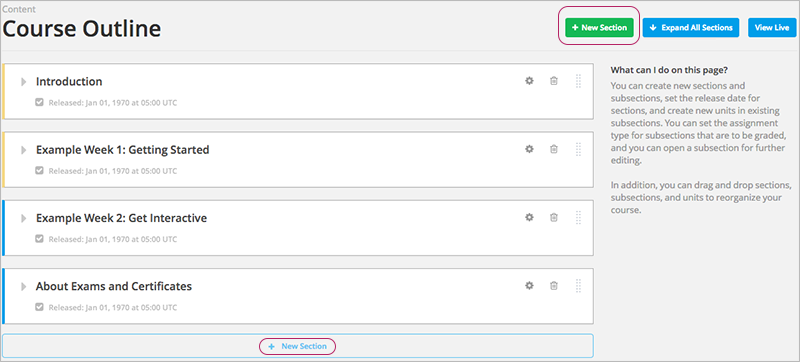

4.3. 创建课程章节¶
创建课程章节之前，您必须了解以下内容：
- `What is a Section?`_
- `Viewing Sections in the Outline`_
- `The Student View of a Section`_
- `Sections and Visibility to Students`_
- `Release Statuses of Sections`_
创建章节时需完成的任务:
- Create a Section
- `Change a Section Name`_
- Set a Section Release Date
- Publish all Units in a Section
- Hide a Section from Students
- `Delete a Section`_
4.3.1. 什么是章节？¶
章节应是课程目录中的第一级标题。 一个章节可以表示一段时间，一章内容或其他组织形式。 一个章节应包含一个或多个小节。
4.3.2. 在课程大纲中预览章节¶
下图显示了大纲中四个收起的章节：

4.3.4. 章节对学生的可见性¶
学生无法看见任何尚未发布或者已过发布期限的章节。
如果出现下列情况，学生仍然可以看见已过发布日期的内容：
- 包含次容的章节已经过了发布日期。
- 已经发布的目标单元。
- 未对学生隐藏的单元。
4.3.5. 章节的发布状态¶
课程制作者可以控制各个章节的发布状态。学生只能看见发布的章节，了解章节的发布状态，请参考以下信息：
4.3.5.1. 尚未设置发布时间¶
如果您在创建新章节时没有修改 course start date
默认开始时间 1/1/2030 00:00:00 UTC，那么该章节的发布日期会显示为 Unscheduled 。
处于这种状态下，学生无法看见该章节中的任何内容，不管该部分内容是否发布。
如果您在创建新章节时修改了课程开始时间，那么该日期就是课程开始的时间
下图用灰条表明了尚未设置发布日期的章节在课程大纲中是如何显示的。
为确保内容对学生可见，请您务必设置发布日期。
4.3.5.2. 已设置发布时间¶
无论章节中的内容是否发布，学生都只能看见处于发布日期中的章节。
下图用绿条表明了设置了发布日期的章节在课程大纲中是如何显示的。
章节只有在到达发布日期后才能对学生显示。
4.3.5.4. 已发布的内容中含有未发布的修改¶
如果您修改了发布章节中的一个单元，但是没有对修改进行重新发布，那么学生是无法看见最新版本的。
下图黄色区域列举了尚未发布的更改是如何在大纲中显示的：
您必须重新发布更改信息才能对学生可见

4.3.6. 创建章节¶
如果您在创建新章节时没有修改 course start date
的默认开始时间 1/1/2030，那么该章节的发布日期会显示为 Unscheduled 。
如果您在创建新章节时修改了课程开始时间，那么该日期默认为课程开始时间。
Caution
如果将课程开始时间设置为过去的时间，那么课程建好后学生就可以访问了。
如何创建章节：
在课程大纲的头部或者底部，单击 新章节 。
新建章节会出现在课程内容的末端，并提示选择章节名称。
输入新章节的名称。描述性的名称能帮助学生在课件中找到内容， 也帮助您在edX Insights分析绩效时选择内容。
您也可以为新建章节 Add subsections
我们建议您在创建章节时 test course content 。
4.3.9. 发布章节中的所有单元¶
点击章节中的“发布”按钮，发布新建及修改的单元：
Note
只有对章节做出修改后，才会出现“发布”按钮。
有关单元发布状态及对学生可见性等相关信息，请查看 单元的发布状态 。
4.3.10. 对学生隐藏章节¶
无论章节中的小节、单元发布状态如何，您都可以对学生隐藏所有内容。
更多内容请参阅 对学生隐藏内容。
如何对学生隐藏章节内容：
点击“设置”按钮。
弹出 设置对 话框。
点击 对学生隐藏 按钮。
点击 保存 。
至此，所有内容都对学生隐藏了。
要对学生开放此章节，只需重复以上步骤，清除 对学生隐藏 复选框。
清除 对学生隐藏 复选框并不会将所有内容呈现给学生，特别是单独设置了对学生隐藏的小节、单元，及尚未发布的内容。
4.3.11. 删除章节¶
删除章节就是删除章节里包含的所有内容。
Warning
删除的课程内容无法恢复。您可以将暂时不用的课程内容存放在一个章节中，并将该章节设置成“永不发布”。
如何删除章节：
- 点击章节中的“删除”按钮：
- 在弹出的确认对话框中选择“是”即可删除该章节。